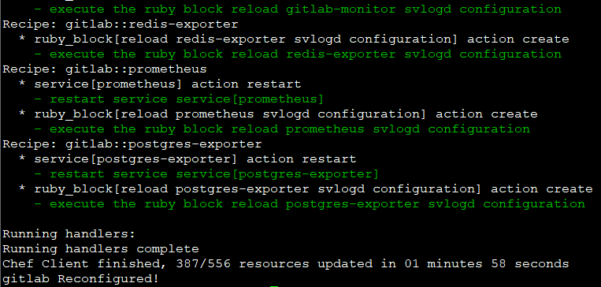
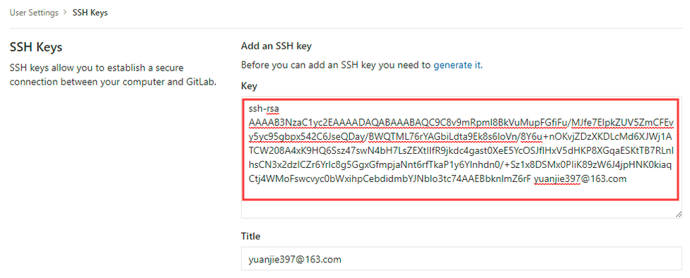

特别说明
我是在服务器防火墙关闭状态下搭建的gitlab服务。
centos7版本对防火墙进行加强，启用firewalld，不再使用原来的iptables
可用firewall-cmd 或 firewalld命令查看当前服务器防火墙状态：
1 | firewall-cmd --state |
安装Gitlab
安装相关依赖
1 | yum -y install policycoreutils openssh-server openssh-clients postfix |
启动postfix，并设置为开机自启
目的：支持gitlab邮件发送功能
1 | systemctl enable postfix && systemctl start postfix |
若此时出现如下报错信息：
解决方法：
打开 /etc/postfix/main.cf 文件，并修改内容如下：
2
3
inet_protocols = ipv4
重新输入
systemctl enable postfix && systemctl start postfix，会发现不再报错。
下载和安装gitlab社区版rpm包
下载路径：gitlab-ce-10.5.2-ce.0.el7.x86_64.rpm
注意：根据自己的linux系统选择合适的包
1 | EL是Red Hat Enterprise Linux的简写 |
下载好之后，输入命令 rpm -ivh gitlab-ce-10.5.2-ce.0.el7.x86_64.rpm 进行安装。
修改访问Gitlab的URL
打开 /etc/gitlab/gitlab.rb 文件，修改 external_url 的值，可以使用自定义域名，也可以是IP地址+端口号。如： external_url 'http://105.13.44.103:1028'，修改完之后，保存即可。
重置并启动Gitlab
重置命令：
gitlab-ctl reconfigure
注：第一次预计需要几分钟

启动：
gitlab-ctl restart
浏览器访问Gitlab
在浏览器中输入刚才在gitlab.rb文件中配置的URL，访问Gitlab。
第一次登陆时，系统会要求你输入密码（此时用户名默认为root）。
至此，Gitlab的搭建就完成了，下面看一下如何在Gitlab里创建和配置项目。
在Gitlab里创建和配置项目
配置Gitlab用户邮箱
首先注册一个gitlab账号，在注册过程中填上自己的邮箱地址。
添加用户侧电脑的key到Gitlab上
先确保你的电脑上已安装Git，打开Git Bash，在bash中输入：
1 | ssh-keygen -t rsa -C “yourEmail@example.com” |
再在 ~/.ssh/id_rsa.pub中复制其中的内容，在User Settings - SSH Keys中添加刚才复制的内容。

将用户侧电脑上已存在的项目上传到Gitlab上
1、先在Gitlab上创建一个空项目，如：test
2、打开本地Git Bash，cd到你需要上传的项目目录下，配置局部的用户名和邮箱地址（为了防止对全局的用户名和邮箱造成影响）
1 | cd ~/your project |
3、执行git命令，将本地项目上传到Gitlab上
1 | git init |
至此，可以到浏览器刷新test项目，发现已经上传成功。
常见问题和常用操作
在执行 git push -u origin master 时可能会报如下错误：
1 | git@xxx's password: |
但此时我确实已经在本地生成了公私钥文件，而且密码输入的也是正确的。为什么还会报Permission denied呢？
这是因为我在生成公钥时使用了自定义的名称（如：gitlab_id_rsa、gitlab_id_rsa.pub）而不是 id_rsa 和 id_rsa.pub，于是我将生成的密钥文件进行改名，再执行git push操作，就可以了。
firewalld和firewall-cmd的使用方法
使用firewalld操控防火墙（防火墙的开启、关闭、开机自启等）
开启防火墙
1 | systemctl start firewalld |
关闭防火墙
1 | systemctl stop firewalld |
设置开机启动防火墙
1 | systemctl enable firewalld.service |
设置开机禁用防火墙
1 | systemctl disable firewalld.service |
查询防火墙状态
1 | systemctl status firewalld |
使用firewall-cmd配置端口
查询防火墙状态
1 | firewall-cmd --state |
查看所有已开放的端口
1 | firewall-cmd --zone=public --list-ports |
重新加载配置，更新防火墙规则
1 | firewall-cmd --reload |
对端口和通道进行配置（修改配置后要重启防火墙）
添加一个端口，并开启协议通道
1 | firewall-cmd --zone=public --add-port=80/tcp --permanent |
移除某个端口
1 | firewall-cmd --zone=public --remove-port=80/tcp --permanent |
重启防火墙（修改配置后要重启防火墙）
1 | firewall-cmd --reload |
查看某个端口的开通状态
1 | firewall-cmd --zone=public --query-port=80/tcp |